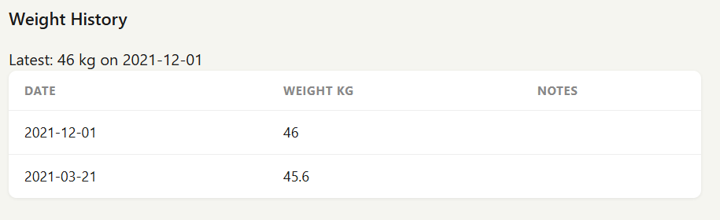

01 / The context
Start by understanding what is already there.
FarmTracker is a livestock-management application with animal records, paddocks, and health events. The assessment called for auditing the inherited codebase, addressing defects, and adding weight tracking across the backend and frontend.
I began with an audit of the data flow and existing behavior. Two immediate issues stood out: paddock occupancy could become inconsistent when an animal moved, and pagination treated a page number like a row offset.
02 / My contribution
One feature, from storage to interaction.
I corrected occupancy updates and pagination, then implemented the weight-history workflow:
- Added an
animal_weightstable with a positive-weight constraint. - Built endpoints to create and retrieve weight records, with validation and clear error responses.
- Added a weight-entry form, latest-weight summary, and history table to the animal detail page.
- Added readable dates and inline feedback so users can see whether an update succeeded.

03 / Engineering choices
Protect the relationships between records.
Moving an animal changes more than one value. The old paddock must lose an occupant, the new paddock must gain one, and the animal's assignment must stay consistent. I wrapped the relevant multi-step writes in SQLite transactions and added guards against invalid paddock references.
The weight endpoints validate input and distinguish missing animals from invalid measurements. Integration coverage includes successful writes, validation failures, missing records, and date ordering. The submission documents 17 of 17 tests passing.
I retained the application's existing stack and visual patterns. A focused assessment was a better place for clear, reviewable changes than a broad rewrite.
04 / Reflection
Leave the next developer a clear path.
Alongside the implementation, I documented the audit, architectural concerns, trade-offs, and follow-up work. My proposed next step was to move growing business logic out of route handlers and extend transaction coverage as the application evolves.
This project reflects how I approach an unfamiliar codebase: understand the existing behavior, prioritize the risk, make a focused change, and explain how it was checked.